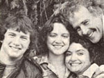
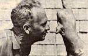

In celebration of little-known MOTHER-type folks from all over.
My father was first introduced to THE Mother Earth News(restricted) back in late 1975 as he was passing through a tiny town in eastern Oregon. Dad thumbed through pages brimming with solar projects, wind machines, and stories about folks working their way toward energy independence . . . and from the moment he read that issue, he began making plans to turn MOTHER-type articles into a 16mm movie.
My father's enthusiasm was so overwhelming that the whole family soon volunteered to assist . . . and before long the Brumfield clan (Papa Kirby, Brother Kirby, Mama Mena, and Sister Lee) took off on an alternative energy odyssey. We followed MOTHER's stories across the country, meeting the nicest of people and recording the most fascinating of exploits. Our goal was to capture the joy, drive, and enthusiasm of "them that's doin' " . . . and after more than a year of weekends, vacations, and midnight hours, we'd finally produced a film.
"Backyard Alternative Energy" was a hit at the annual meeting of the Oregon Community Services Administration . . . and requests to view our masterpiece began pouring in (write: Kirby Brumfield, Dept. TMEN, 10003 S.W. 60th, Portland, Oregon 97219). Then, in 1979, our work of art received the highest of honors . . . when the film-lauded by the Council on International Nontheatrical Events (CINE) as one of the nation's best nontheatrical movies-became the proud recipient of CINE's Golden Eagle award! -Lee Brumfield.
There's a remarkable teacher at Fellowes High School in Pembroke, Ontario . . . who's incorporating concern for the environment with technical skills. Renton Patterson has, you see, been helping his shop classes to build alternative vehicles.
Patterson started his program in 1975, when he guided his students in the design and construction of Thundervolt 1 . . . a 1950's MG powered by eight 12-volt batteries (borrowed from an auto mechanics shop) and two used motors (obtained from a California aircraft surplus company). The car-which cost the school budget $115-achieved a final travel range of 15 miles at 25 MPH. The admirable outcome of that first project led to Thundervolts 2 and 3: The former is an electric boat, which can maintain a top speed of 10 MPH for about 40 minutes . . . the latter an electrically powered AspenVolare, which boasts a range of 65 miles at 30 MPH.
Renton is enthusiastic about the success of his program. "No amount of standard classroom instruction," says Patterson, "can ever hope to equal the contribution to student growth and development that a hands-on project of this nature can provide! "-Helen Mason.
Dr. Bill Emery first observed Texas wild rice (Zizania texana) when he began teaching at Southwest Texas State University in 1957. The plant-which was not known to be growing anywhere else in the world-was native to the San Marcos River . . . and Emery could see that it was on its way to extinction. Therefore, he set out to transplant some of the rice to nearby locations in the hope that it would flourish, and-to the professor's surprise-the plant (which had previously been reproducing by vegetative methods only) began a pattern of flowering, seed production, and aerial pollination. With the seed, Bill was able to find other areas where the rice would grow . . . and his success finally pulled Zizania texana out of the danger zone.
As a result, Emery began phase two of his project: hybridization and selection . . . crossing Texas wild rice-which is both high in nutritional value and capable of thriving in streams, swamps, marshes, and even tundra-with other strains, in an effort to create a new, commercially desirable variety. "We've exploited most of the agricultural land that can grow wheat and corn," says Dr. Emery. "It will take new crops that utilize new habitats to produce the additional food needed for our exploding population. "-Heber Taylor.
It all began back in 1937, when Tom and Virginia Gaskins moved to Palmdale, Florida and established a homestead on the edge of the Fisheating Creek Swamp. The couple built a home roofed with hand-split shingles . . . and started collecting cypress knees.
Cypress knees, for those who may not know, are protuberances-usually roughly conical in shape and from one to nine and a half feet in height-that develop around the towering trees for which they are named. Tom soon discovered that-when steamed, debarked, and then covered with a mildew preventive-the growths became beautiful, natural sculptures . . . which could easily be marketed. A small ad in a national magazine launched the Gaskins' business, but the family kept the very best specimens-many of which are suggestive of people and animals-to be placed in their Cypress Knee Museum.
In 1951 Tom and Virginia began charging a $1.00 admission fee (which remains the same today) to view their collection . . . and for thirty years now-in both summer and winter-tourists have filled the museum. Each year, visitors find a horde of new wonders to behold . . . because as long as the Fisheating Creek Swamp replenishes Mother Nature's supply of wooden figures, the Gaskins keep adding to their treasure house!-MikeSmith.
Thanks to Stanford University student PETER AXELSON, paraplegics can now enjoy downhill skiing. Axelson has invented a sledlike device called the Arroyo. The vehicle is made of molded fiberglass and has two stainless steel "rudders" that allow it to be maneuvered with the aid of short ski poles and the skier's shifted body weight. (The Arroyo comes equipped with a quick-release evacuation harness for use in an emergency.)
Two California Institute of Technology researchers, DOROTHY SETTLE and CLAIR PATTERSON, have found that tuna packed in lead-soldered cans (as most brands are) may contain 50 times as much of the metal as fish packed in nonsoldered tins. Patterson and Settle-who contend that "half the lead in the American diet originates from such containers"-are urging that the cans be banned . . . since they constitute a serious threat to public health.
ROY KAIN is one of the few remaining experts in the vanishing art of handcrafting carriages and buggies. The 38-year-old resident of Wellsboro, Pennsylvania learned his skill during a seven-year apprenticeship under a master carriagemaker . . . and can turn out one of the wooden rigs in from eight to ten days. Kain's pony-sized and horse-sized models sell for approximately $400 and $550, respectively.-JV.
|
 |
 |
|